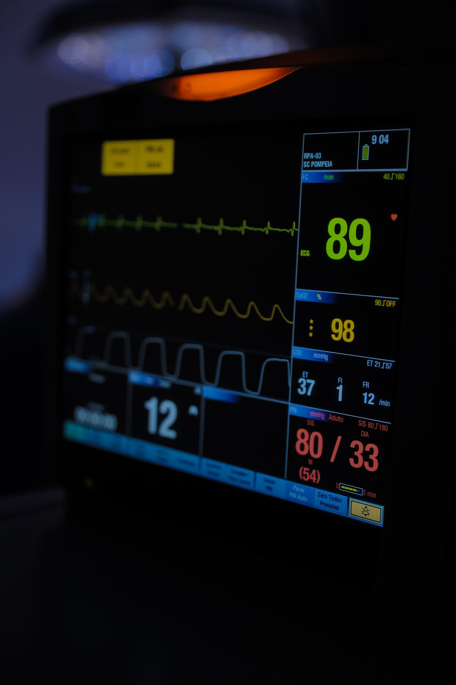

Toda cirurgia — inclusive a estética — é um ato médico de responsabilidade. E a segurança de um ato médico nunca depende de um único fator: ela é construída em camadas, que começam semanas antes da cirurgia e continuam depois dela. Quando todas funcionam juntas, o paciente raramente as percebe. É justamente esse o objetivo.
Este artigo apresenta essas camadas, uma a uma, para que você saiba o que observar — e o que perguntar — antes de tomar qualquer decisão cirúrgica.

Cirurgia eletiva é cirurgia planejada
A cirurgia plástica tem uma característica que joga a favor da segurança: ela é, em regra, eletiva. Diferente de uma emergência, há tempo para preparar tudo — e esse tempo é a primeira camada de proteção.
O planejamento começa na avaliação pré-operatória: histórico de saúde completo, exames solicitados conforme o caso, avaliações complementares quando indicadas e uma conversa franca sobre hábitos que interferem na cirurgia — como tabagismo e uso de medicamentos. Nenhuma etapa é burocracia: cada uma existe para que a cirurgia só aconteça quando as condições do paciente forem adequadas. Se algo pede ajuste, adia-se. Cirurgia eletiva boa é aquela que pode esperar o momento certo.
O ambiente importa
A segunda camada é o lugar onde a cirurgia acontece. Um ambiente cirúrgico adequado reúne centro cirúrgico equipado, área de recuperação anestésica, suporte de enfermagem e retaguarda para responder a intercorrências — tudo em funcionamento coordenado.
Dentro desse tema, existe um conceito que vale conhecer: o do ambiente dedicado. Trata-se de estruturas voltadas a uma única especialidade, onde todo o fluxo — agenda, equipe, materiais, rotinas de limpeza — é desenhado em função de um só tipo de cirurgia. Num hospital dedicado exclusivamente à cirurgia plástica, por exemplo, não circulam emergências nem internações de doenças infecciosas: o movimento inteiro do prédio é de cirurgias eletivas planejadas. Isso simplifica o controle do ambiente e concentra a experiência da equipe num único ofício, repetido e refinado todos os dias.
Esse conceito é estudado pela literatura médica — e nós o exploramos com mais profundidade, com as devidas referências, na nossa página de Segurança.
Esterilização: a camada que ninguém vê
Todo instrumento que toca um paciente passou, antes, por um circuito rigoroso de limpeza, preparo e esterilização. Esse circuito acontece na central de material e esterilização — a CME —, um setor técnico que o paciente nunca visita, mas do qual depende diretamente.
Quando a esterilização é feita dentro da própria instituição, sob controle direto da equipe, o circuito completo — do uso à esterilização e ao armazenamento — permanece sob um único padrão e uma única responsabilidade. É o tipo de detalhe invisível que separa uma estrutura cirúrgica séria de uma improvisada.
Quem está na sala além do cirurgião
Cirurgia é trabalho de equipe. Além do cirurgião plástico, participam do ato o anestesiologista — responsável por conduzir a anestesia e monitorar o paciente do início ao fim — e a equipe de enfermagem de centro cirúrgico, treinada nas rotinas do bloco. Depois da cirurgia, é a enfermagem que acompanha o despertar e os primeiros cuidados.
Ao avaliar onde operar, você tem o direito de saber quem estará nessa sala. Perguntar pelo anestesiologista, pela equipe de apoio e por quem acompanha a recuperação não é excesso de zelo — é participação informada no próprio cuidado.
Rotinas e listas de verificação
Há ainda uma camada de segurança feita de papel e disciplina: os protocolos. Ambientes cirúrgicos sérios trabalham com listas de verificação de cirurgia segura — rotinas que conferem, em voz alta e em momentos definidos, itens como a identidade do paciente, o procedimento previsto, os materiais em sala e as etapas críticas do ato anestésico e cirúrgico. Pode parecer excesso de formalidade; é o contrário. A repetição padronizada existe para que nenhum detalhe dependa apenas da memória de uma pessoa num dia cheio.
Protocolos funcionam melhor onde existe cultura de segurança: um ambiente em que qualquer membro da equipe — do instrumentador ao cirurgião — pode apontar algo fora do padrão e ser ouvido. Essa cultura não aparece em fotos nem em folhetos, mas transparece na forma como a equipe conversa sobre segurança quando o paciente pergunta. Pergunte.
O papel do paciente na própria segurança
Há uma camada de segurança que só o paciente pode oferecer: a informação. Contar todo o histórico de saúde — doenças, cirurgias anteriores, alergias, medicamentos e suplementos em uso, hábitos como fumo e álcool — permite que a equipe planeje com dados reais. Omitir por receio de contraindicação é trabalhar contra si mesmo.
Seguir o preparo pré-operatório com rigor completa essa camada. Algumas perguntas que ajudam a avaliar a estrutura antes de decidir:
- Onde exatamente a cirurgia será realizada — e o que existe nesse endereço além da sala cirúrgica?
- Como é feita a recuperação anestésica e quem a acompanha?
- Haverá anestesiologista dedicado ao meu procedimento, do início ao fim?
- Como a instituição responde a uma intercorrência durante ou após a cirurgia?
- Onde e como passo as primeiras horas — ou a primeira noite — depois de operar?
Segurança não aparece na foto — mas está em cada uma delas
O resultado estético é o que se vê; a segurança é o que torna esse resultado possível. Um ambiente cirúrgico seguro não elimina os riscos inerentes a qualquer cirurgia — isso nenhuma estrutura pode prometer —, mas organiza cada camada para preveni-los, detectá-los cedo e respondê-los bem. É essa engenharia silenciosa que merece a sua atenção na hora de decidir.
Como fazemos aqui: o Hospital Espaço da Plástica, em Campo Grande-MS, é dedicado exclusivamente à cirurgia plástica — sem pronto-socorro e sem internações de doenças infecciosas —, com centro cirúrgico próprio e central de esterilização dentro do hospital. Saiba mais na página de Segurança e conheça a estrutura completa.
Este artigo tem caráter exclusivamente informativo e não substitui a consulta médica. Todo procedimento cirúrgico envolve riscos. A avaliação individual com um cirurgião plástico é indispensável.